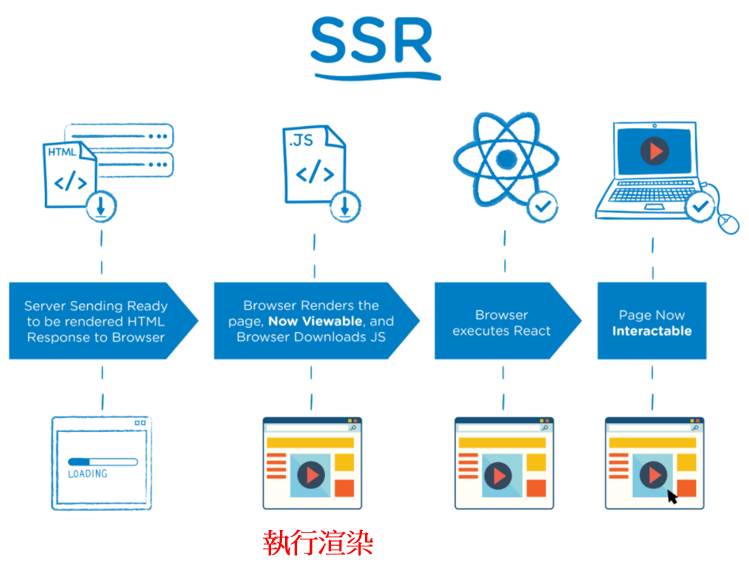

客戶端與伺服端渲染
在進入 React 的開發之前，最後提一下客戶端渲染(CSR)與伺服端渲染(SSR)
伺服端渲染 (Server-Side Render)
SSR，很常使用在如 PHP、Ruby 編寫的伺服器語言，以PHP來說
很常看到會有以下的寫法：
<!DOCTYPE html>
<html lang="en">
<head>
<meta charset="UTF-8">
<meta http-equiv="X-UA-Compatible" content="IE=edge">
<meta name="viewport" content="width=device-width, initial-scale=1.0">
<title>Document</title>
</head>
<body>
<?php
$DB_HOST = 'localhost'; // 主機
$DB_USER = 'root'; // 登入 MySQL server 的帳號
$DB_PASS = 'password'; // 密碼
$DB_NAME = 'mydb'; // 要登入的資料庫名稱
$connection = mysqli_connet($DB_HOST, $DB_USER, $DB_PASS, $DB_NAME, $DB_NAME);
if ($connection) {
$query = 'SELECT * FROM User';
$result = mysqli_query($connection, $query);
$data = mysqli_fetch_array($result, MYSQLI_ASSOC);
foreach ($row as $value) {
echo _END
<div> 用戶名稱： $row["username"] </div>
<div> 用戶餘額： $row["balance"] </div>
_END;
}
?>
</body>
</html>
注意到 <?php ?> 環繞的部分，因為 PHP 解釋器是通過該標籤來判斷，是不是要要進行翻譯的
由伺服器端把資訊給整理好，輸出成一份HTML文件，最後整份移交給客戶端，這種作法稱為"伺服端渲染"
客戶端渲染 (Client-Side Render)
CSR 的做法就比較簡單，在前幾個章節，有提到 AJAX 和 REST API，
客戶端渲染的作法，就是由客戶端取的資料後，使用 JavaScript 進行繪製
簡單比較
首先來看兩者的時序圖
伺服器端渲染

客戶端渲染

主要的差異在於，一張網頁上的所有資料，伺服器端渲染會在伺服器都處理好相關資訊，然後回傳一份文件給客戶端
而客戶端渲染則是由客戶端取得資料後，在使用JavaScript繪製出畫面
而現今的作法，都稱為前後端分離，前端使用如Vue、React、Angular 框架；
後端實作REST API，優點是關注點很好分離，且前後端各自維護也比較方便；
且可以把計算效能分散給終端的用戶，傳輸的資料量也比較小
缺點則是對於客戶端的效能比較要求，且不好做SEO
不過還是可以使用 Hybird 架構，比方說 "首個頁面" 使用伺服器端渲染，其後的畫面在使用客戶端渲染即可
章節回顧
該章節僅釐清了 CSR 與 SSR 的概念，並且知道彼此的優缺點是什麼即可
- 伺服端渲染
- 客戶端渲染
- 兩者差異